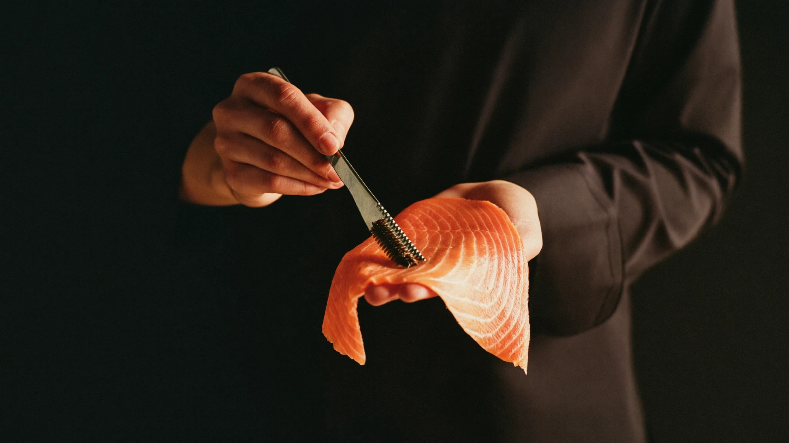
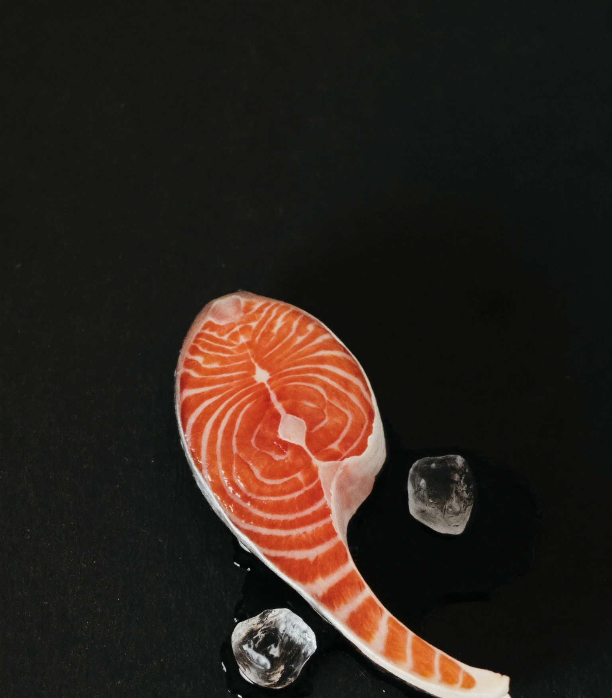
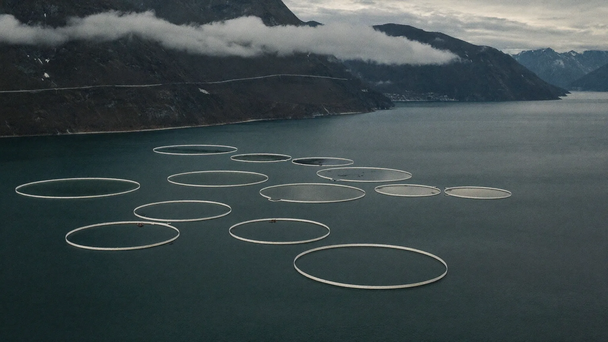
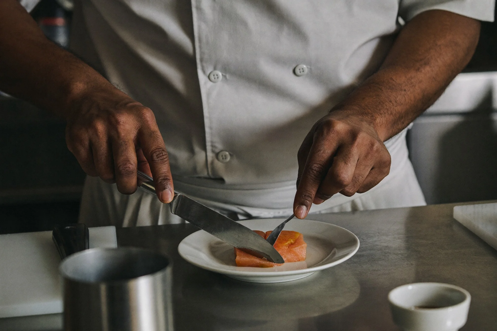
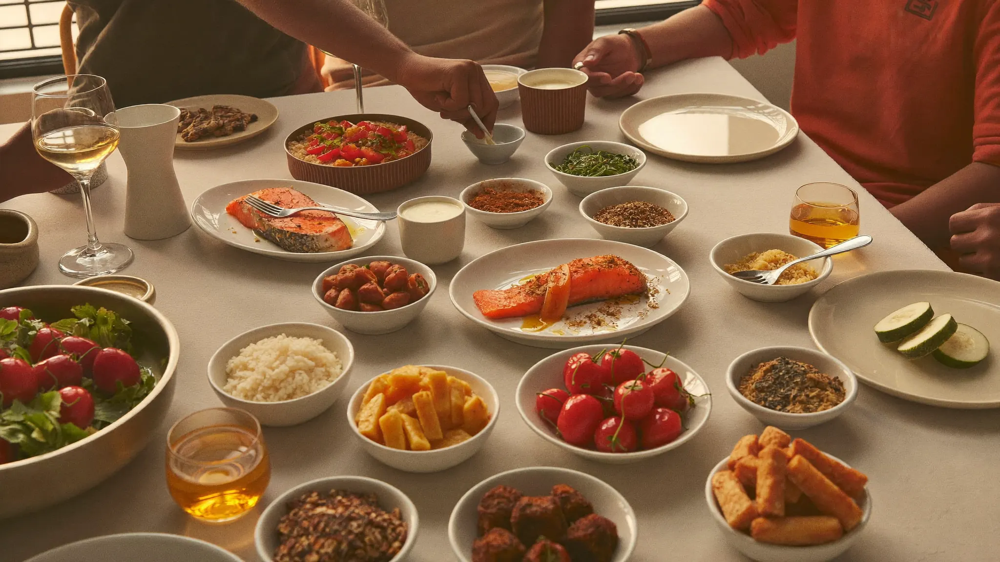
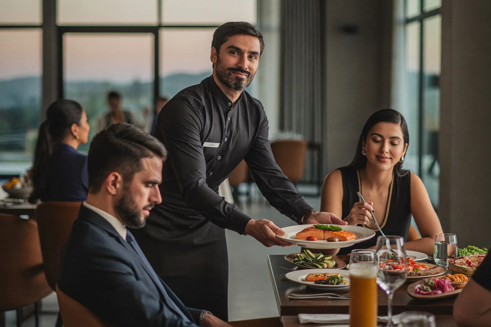
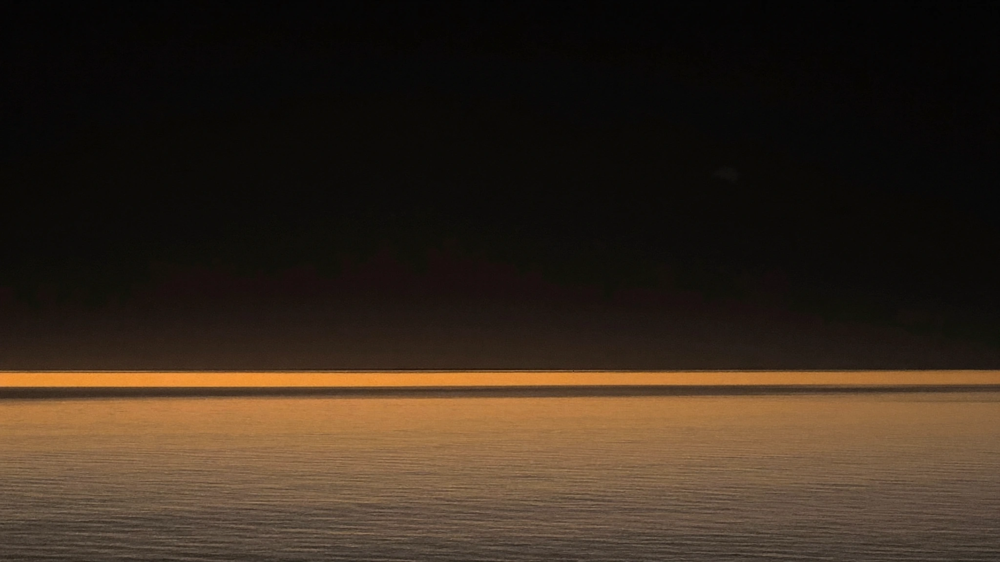

Pure by Nature. Crafted by Kelda.
Born from Norway's cold, clear Atlantic waters. Crafted for exceptional food experiences in India.
A Name Chosen With Purpose.
Because the right way and the sustainable way should always be the same way.
A pure spring
Kelda takes its name from the Old Norse word for a pure spring. The name reflects a belief that exceptional food begins with exceptional origins.
Purity, not a claim
For us, purity is not a marketing claim. It is a principle that guides every decision we make, from sourcing and quality standards to how we build our partnerships.
Great food deserves a story
Every product begins with Norwegian origin, carefully selected seafood and a commitment to quality.

A Brand Built for Growth.
Kelda was created from a simple idea: great food deserves a story.
Premium Norwegian salmon, prepared for Indian homes, restaurants and food businesses.
The range grows as the brand grows — always from Norwegian origin.

From the Cold, Clear Waters of Norway
Born along the Norwegian coast. Everything starts in Norway.
Along one of the world's longest coastlines, cold waters and strong ocean currents create ideal conditions for premium seafood.
From Norway. Shared Around Your Table
India is discovering new flavours, new cuisines and a new appreciation for premium food experiences. Kelda was created for this new generation of consumers: from Norway's cold, clear Atlantic waters, through trusted partnerships and responsible sourcing, to homes, restaurants and dining tables across India.
-

Everyday Moments
Great food doesn't have to wait for a special occasion. Whether it's a family dinner or a quiet meal at home, Kelda brings premium Norwegian salmon to everyday life with freshness, quality and simplicity.
-

Shared Around the Table
Some meals are about more than food. They bring family and friends together. Kelda is created for the moments worth sharing, combining Norwegian quality with flavours people love.
-

Inspired by India
Great ingredients deserve great creativity. From traditional Indian recipes to modern fusion cuisine, Kelda is designed to inspire chefs, home cooks and everyone who enjoys discovering something new.

Inspired by Norway. Shared Across India.
The journey has just begun.
Today, Kelda starts with salmon. Tomorrow, it becomes something bigger. Learn more about our products, our story and our vision for premium Norwegian seafood in India.
Talk to us about KeldaLet's Start a Conversation
Looking for a long-term seafood partner?
Whether you are interested in Kelda products, seafood sourcing or distribution partnerships, we would like to hear from you.